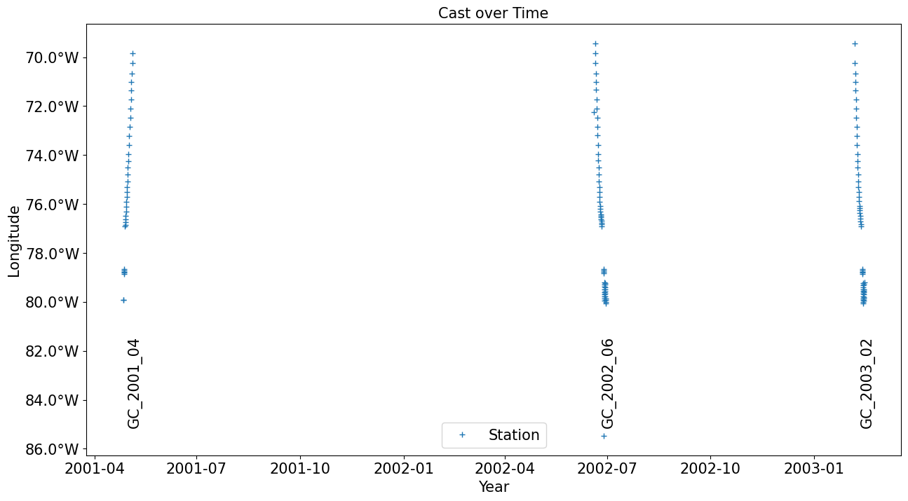

Import all necessary packages
[1]:
import numpy as np
import pandas as pd
import os
import xarray as xr
import matplotlib.pyplot as plt
import importlib
import yaml
import glob
import sys
#sys.path.append(os.path.abspath('').split('notebooks')[0])
from WBTSdata import plotters, tools, merge_datasets, config
/home/runner/work/WBTSdata/WBTSdata/WBTSdata/load_vel_files.py:31: SyntaxWarning: invalid escape sequence '\s'
vel_list.append(pd.read_csv(os.path.join(vel_dir, vel_file),names=column_names, skiprows=74, sep='\s+', encoding='utf-8'))
/home/runner/work/WBTSdata/WBTSdata/WBTSdata/load_cal_files.py:34: SyntaxWarning: invalid escape sequence '\s'
cal_list.append(pd.read_csv(os.path.join(cal_dir, cal_file), names=column_names, skiprows=12, sep='\s+'))
Note: This assumes you have already installed the package using
pip install -e .
Demo Configuration
This demo notebook processes only the first 3 years of data (2001-2003) for demonstration purposes. This prevents memory issues when loading all 27 years of data simultaneously.
For processing the full dataset, use:
ds_all = merge_datasets.merge_years(output_dir) # Process all files
Load the merged file
Loads the file created by running the script load_data.ipynb
[2]:
### import basepath from mission_config.yaml
config = tools.get_config()
input_dir = config['input_dir']
output_dir = config['output_dir']
print('Input directory: ',input_dir ,'\nOutput directory: ',output_dir)
Input directory: ../data/input
Output directory: ../data
[3]:
ds_all = merge_datasets.merge_years(output_dir, max_files=3)
/home/runner/work/WBTSdata/WBTSdata/WBTSdata/merge_datasets.py:235: FutureWarning: In a future version of xarray the default value for join will change from join='outer' to join='exact'. This change will result in the following ValueError: cannot be aligned with join='exact' because index/labels/sizes are not equal along these coordinates (dimensions): 'DEPTH' ('DEPTH',) The recommendation is to set join explicitly for this case.
concatenated_ds = xr.concat(processed_datasets, dim='DATETIME')
Processing 3 files for demonstration (limited from 3 total)
Loading WBTS_2001_04_CTD_LADCP.nc...
Loading WBTS_2002_06_CTD_LADCP.nc...
Loading WBTS_2003_02_CTD_LADCP.nc...
[4]:
ds_all
[4]:
<xarray.Dataset> Size: 60MB
Dimensions: (DATETIME: 148, DEPTH: 5595)
Coordinates:
* DEPTH (DEPTH) float64 45kB 1.0 2.0 3.0 ... 5.594e+03 5.595e+03
* DATETIME (DATETIME) datetime64[ns] 1kB 2001-04-26T17:06:58 ... 2...
LATITUDE (DATETIME) float64 1kB 26.45 27.02 26.43 ... 26.99 26.99
LONGITUDE (DATETIME) float64 1kB -79.92 -79.92 ... -79.28 -79.2
Data variables:
TEMP (DATETIME, DEPTH) float64 7MB 26.02 26.02 ... nan nan
THETA (DATETIME, DEPTH) float64 7MB 26.02 26.02 ... nan nan
PSAL (DATETIME, DEPTH) float64 7MB 36.23 36.23 ... nan nan
DYN_HEIGHT (DATETIME, DEPTH) float64 7MB 0.004 0.008 ... nan nan
GA (DATETIME, DEPTH) float64 7MB 0.993 1.987 2.98 ... nan nan
DOXY (DATETIME, DEPTH) float64 7MB 214.4 214.5 ... nan nan
TIME_FLAG (DATETIME) float64 1kB 0.0 0.0 0.0 0.0 ... 0.0 0.0 0.0 0.0
CAST_NUMBER (DATETIME) float64 1kB 0.0 1.0 2.0 3.0 ... 52.0 53.0 54.0
GC_STRING (DATETIME) <U10 6kB 'GC_2001_04' ... 'GC_2003_02'
U_WATER_VELOCITY (DATETIME, DEPTH) float64 7MB nan nan nan ... nan nan nan
V_WATER_VELOCITY (DATETIME, DEPTH) float64 7MB nan nan nan ... nan nan nan
ERROR_VELOCITY (DATETIME, DEPTH) float64 7MB nan nan nan ... nan nan nan
Attributes: (12/26)
title: CTD and LADCP data of the Abaco Cruise
project: Western Boundary Time Series
project_id: AB0104 / OC365-9
platform: CTD and Lowered Acoustic Doppler Current Prof...
geospatial_lat_min: 26.033
geospatial_lat_max: 27.421
... ...
data_url:
web_link: https://www.aoml.noaa.gov/phod/wbts/data.php
comment: GIT repository: https://github.com/ifmeo-hamb...
date_created: 2024-12-06
featureType: profile
Conventions: CF-1.11[5]:
ds_all.to_netcdf(output_dir+'/Merged/'+'WBTS_all_years_CTD_LADCP.nc')
Plot the stations of the whole time series for different longitudes
[6]:
# Example usage
fig, ax = plotters.plot_cast_over_time(ds_all)
plt.show()
/home/runner/work/WBTSdata/WBTSdata/WBTSdata/plotters.py:39: UserWarning: set_ticklabels() should only be used with a fixed number of ticks, i.e. after set_ticks() or using a FixedLocator.
ax.set_yticklabels(ytick_labels)

[ ]: